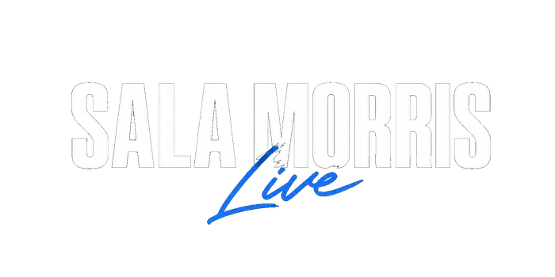

Ogni giorno condivido le operazioni che seguo sul mercato insieme ai videocorsi e alla strategia che utilizzo. Ti insegnerò a farlo entro 24 ore dall'accesso in community.
Posti limitati • Accedi in 5 minuti
Messaggio personale
da Morris
Quello che ti mostrerò nella Sala Morris è quello che ho già usato per generare €18.000 in un mese, adesso voglio insegnarlo a te.
Posti limitati • Accedi in 5 minuti
Questa non è la solita sala
come vogliono farti credere...
Se stai leggendo questa pagina, probabilmente sei come tante altre persone che ho incontrato negli ultimi mesi.
Hai un lavoro che non ti basta. Hai una vita normale, responsabilità reali, forse una famiglia da mantenere. Hai sentito parlare dei mercati finanziari e capisci che sono reali — ma non sai esattamente come usarli per migliorare la tua situazione economica.
Magari hai anche già comprato qualche corso. Hai guardato decine di video su YouTube. Ti sei iscritto a webinar pieni di promesse. Ma alla fine non hai mai costruito niente di concreto.
Voglio dirti una cosa importante: non è colpa tua. Fino a 2 anni fa, costruire un business online che funzionasse davvero richiedeva almeno 20.000€ di investimento e 6 mesi di lavoro a vuoto. Era un sistema fatto per pochi privilegiati — non per te.
Adesso le cose sono cambiate.
Con i mercati finanziari, oggi puoi partire con davvero poco e iniziare fin da subito — una piccola attività online tutta tua — in 1 settimana partendo anche da zero, senza dover vendere nulla, mostrare la faccia o acquistare un ufficio.
Io l'ho fatto. Scorso mese ho generato 18.000€ in un mese con un solo conto, senza spendere un euro in corsi. La mia fidanzata usa lo stesso metodo per ricevere più di 10 operazioni reali al giorno — senza aver mai conseguito una laurea in finanza.
E adesso voglio mostrarti come fare esattamente la stessa cosa. All'interno della Sala Morris condivido le operazioni che seguo sul mercato insieme ai videocorsi e alla strategia che utilizzo. Solo chi avrà l'accesso potrà seguirle assieme a me.
Entro 24 ore ti mostrerò esattamente il metodo che uso io. Passo dopo passo. Con i numeri. Con gli strumenti precisi. Con operazioni concrete.
Ma c'è una cosa importante che devi sapere: questa opportunità non durerà per sempre. Hai una finestra di 12-24 mesi per entrare prima che troppe persone capiscano come fare. Dopo, il vantaggio sparirà.
Se sei stanco di guardare gli altri e vuoi finalmente costruire qualcosa di tuo — la Sala Morris è per te.
Richiedi l'accesso. Riserva il tuo posto. Ci vediamo nella Sala Morris.
Posti limitati • Accedi in 5 minuti
Posti limitati per sessione · Iscrizione gratis
Lascia i tuoi dati per entrare nella Sala Morris. Niente promessa magica, niente hype. Solo il sistema operativo che chi guadagna davvero con il trading usa — in italiano, gratis.
Posti limitati • Accedi in 5 minuti